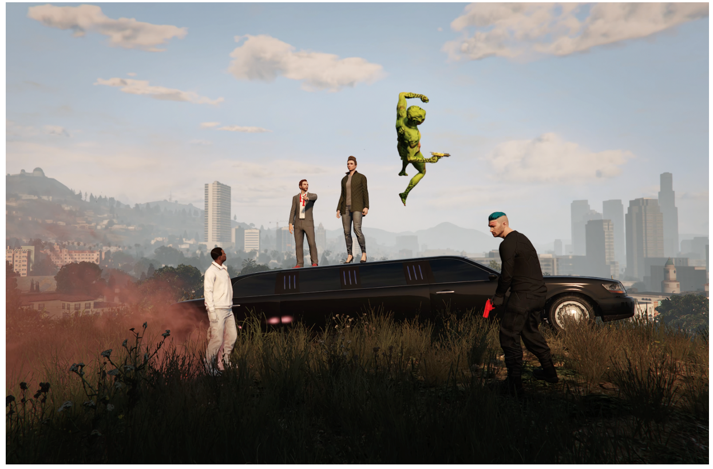

link to mubi and upcoming screenings
It’s January 2021. The UK has just entered its 3rd lockdown and all theatres remain closed. For actors Sam and Mark, the future looks bleak. As the pandemic drags on Mark who lives alone is increasingly socially isolated, while Sam is panicking about how he is going to support his family. They channel their midlife frustrations by immersing their avatars in the horrifically violent yet beautifully rendered virtual world of Grand Theft Auto Online. They steal cars and shoot strangers, but also find moments of calm reflection walking through meadows of wildflowers. In one gaming session they stumble across a theatre and have an idea. Why not stage Hamlet inside the game? Well, there are several reasons why not, chiefly that most people in the game are intent on murderous destruction, not polite appreciation of a theatrical production. But wasn’t theatre just as dangerous and rowdy a business in Shakespeare’s time, and isn’t Hamlet, a play about revenge the perfect choice for this place?
This documentary is shot entirely inside the world of Grand Theft Auto. It's ground-breaking and necessary - especially at a time when more and more of our lives (even a cultural artefact as ancient as live theatre) move online. The documentary asks what is this space? How do we use it now and what else is possible inside it? Can we transport this ancient story inside a brand new one? And will it still make sense? The cinematic potential of Los Santos is immediately apparent, with its glittering, mind-blowingly detailed cityscape and surrounding countryside, the ray-traced rendering of light, ever-changing weather systems and intricate sound design. By using the in-game phone camera we were able to get intimate close ups and cinematic pans across landscapes - enabling a more cinematic visual language and moments of pathos, emotion and lyricism to exist within the chaos and violence of this undiscovered country.
Written and Directed By
Pinny Grylls and Sam Crane
Associate Writer and Director
Mark Oosterveen
Filmed and Edited by
Pinny Grylls
Produced by
Rebecca Wolff and Julia Ton
Music and Sound Design by
Jamie Perera
Executive Produced by
Beth Levison
Harlene Freezer
Sam Bisbee
Cody Ryder
Jackie Kelman Bisbee
Eric Kuhn
Sam Crane
Hannah Bush Bailey
Shanida Scotland
Robina Riccitello
Josh Peters
Will Clarke
Andy Mayson
Mike Runagall
Sales Agent:
Altitude Films
For all enquiries please contact info@altitudefilment.com